<h1>List of cards</h1>
Click on a card and then browse the previous card or the following card from the current card.<BR>There are at most 25 cards per page<BR>The card order is random (at HTML compile time).<ul><LI><center><A HREF="card-200.html" target="_blank">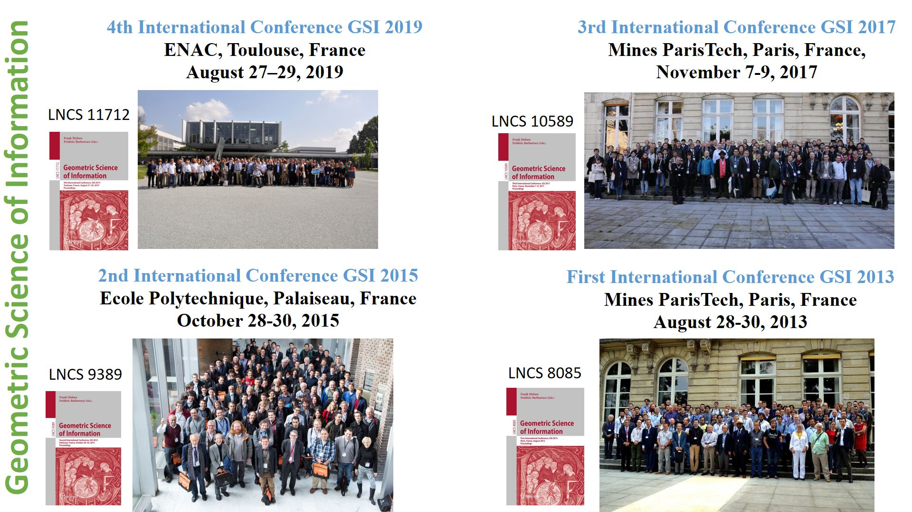</A>(200)</LI>
<LI><center><A HREF="card-201.html" target="_blank">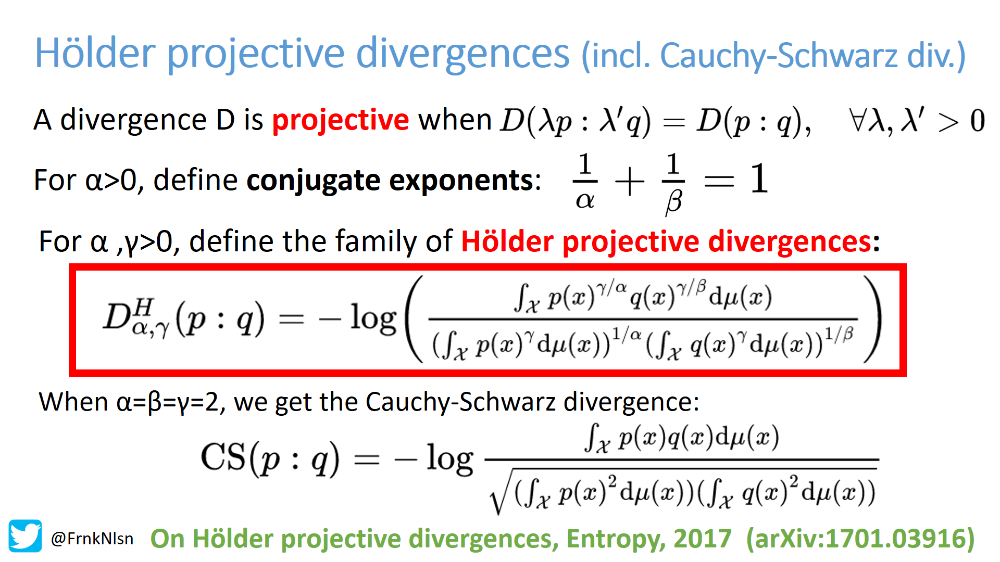</A>(201)</LI>
<LI><center><A HREF="card-202.html" target="_blank">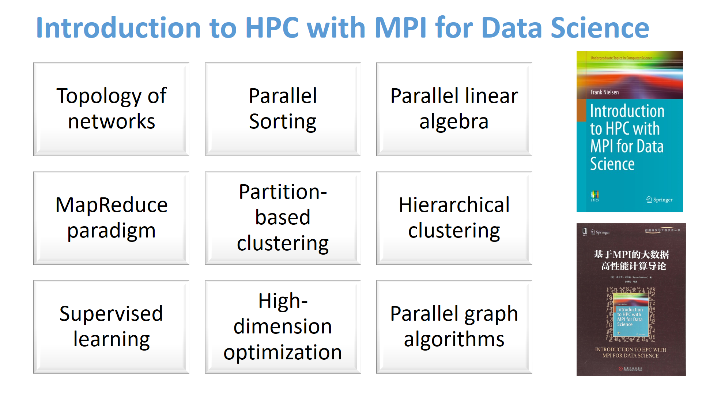</A>(202)</LI>
<LI><center><A HREF="card-203.html" target="_blank">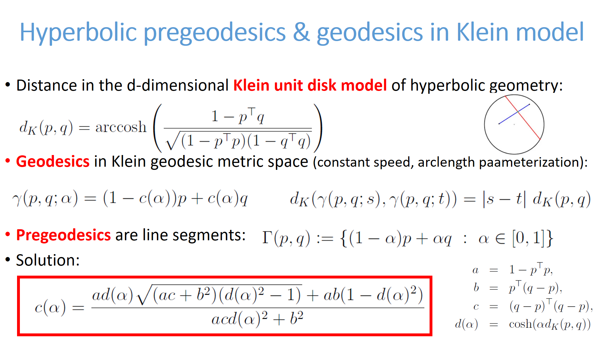</A>(203)</LI>
<LI><center><A HREF="card-204.html" target="_blank">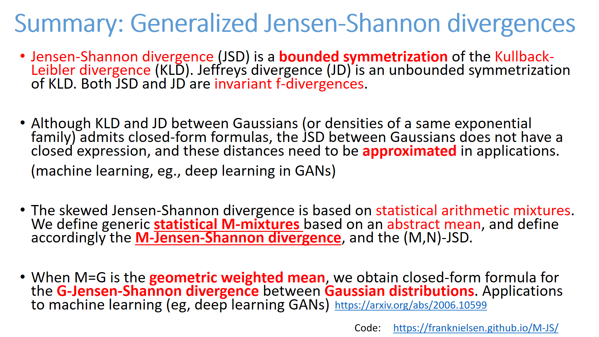</A>(204)</LI>
<LI><center><A HREF="card-205.html" target="_blank"></A>(205)</LI>
<LI><center><A HREF="card-206.html" target="_blank">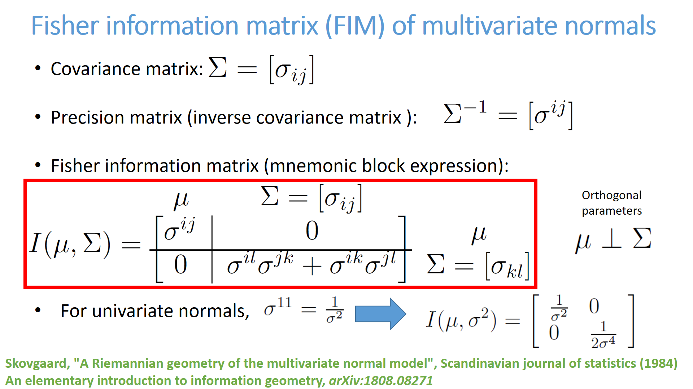</A>(206)</LI>
<LI><center><A HREF="card-207.html" target="_blank">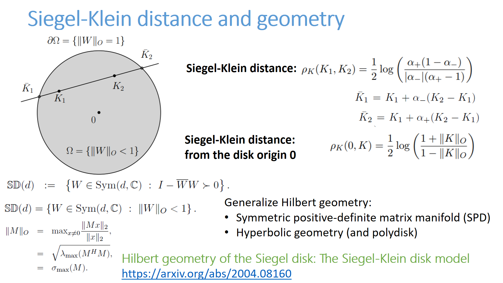</A>(207)</LI>
<LI><center><A HREF="card-208.html" target="_blank"></A>(208)</LI>
<LI><center><A HREF="card-209.html" target="_blank">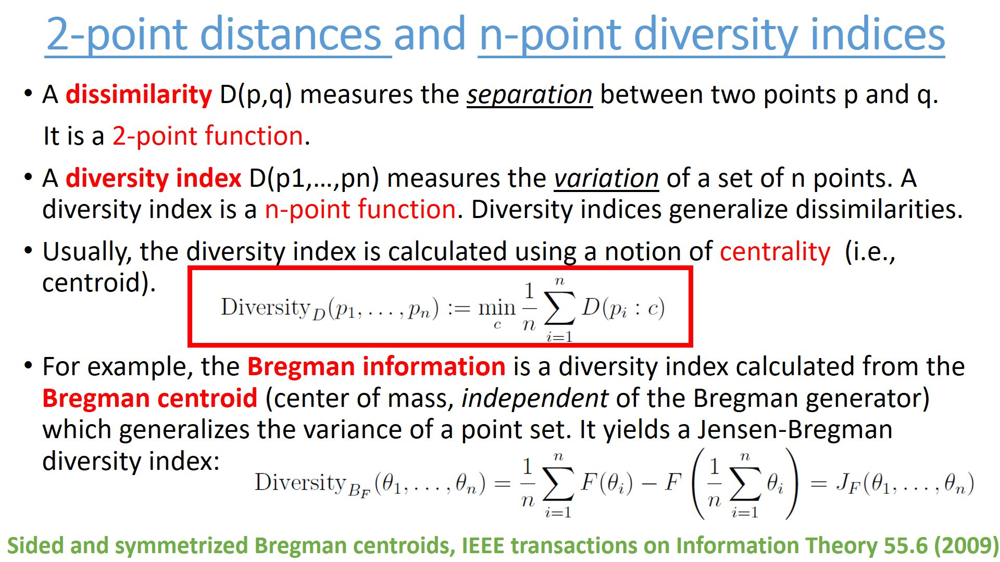</A>(209)</LI>
<LI><center><A HREF="card-210.html" target="_blank"></A>(210)</LI>
<LI><center><A HREF="card-211.html" target="_blank">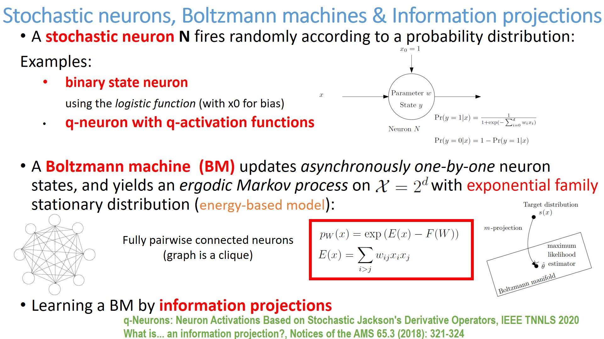</A>(211)</LI>
<LI><center><A HREF="card-212.html" target="_blank">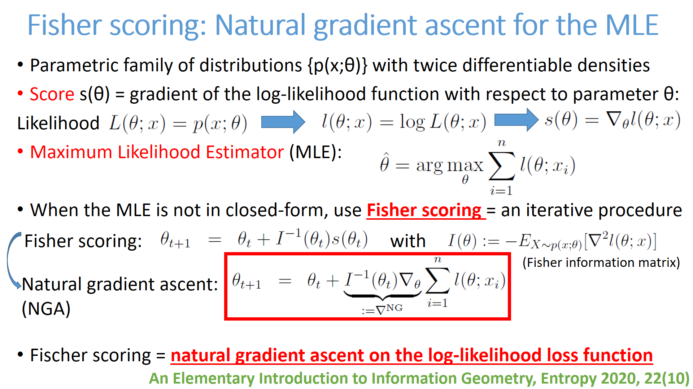</A>(212)</LI>
<LI><center><A HREF="card-213.html" target="_blank">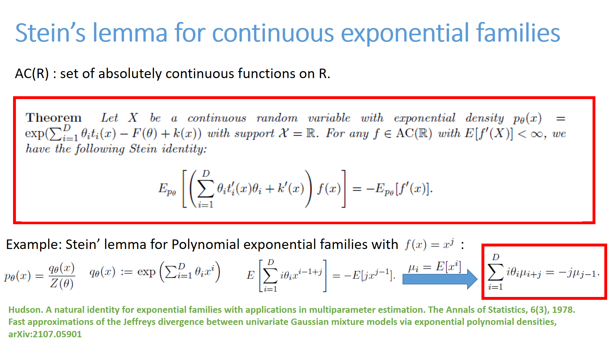</A>(213)</LI>
<LI><center><A HREF="card-214.html" target="_blank"></A>(214)</LI>
<LI><center><A HREF="card-215.html" target="_blank">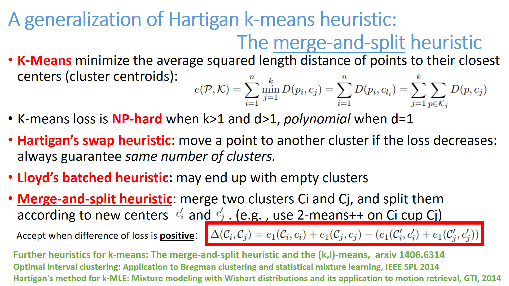</A>(215)</LI>
<LI><center><A HREF="card-216.html" target="_blank">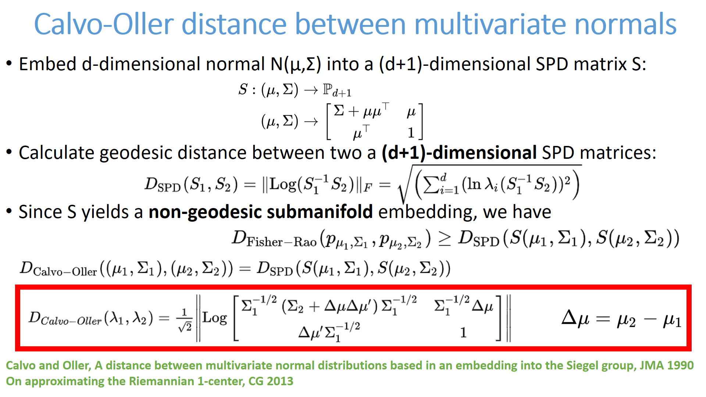</A>(216)</LI>
<LI><center><A HREF="card-217.html" target="_blank">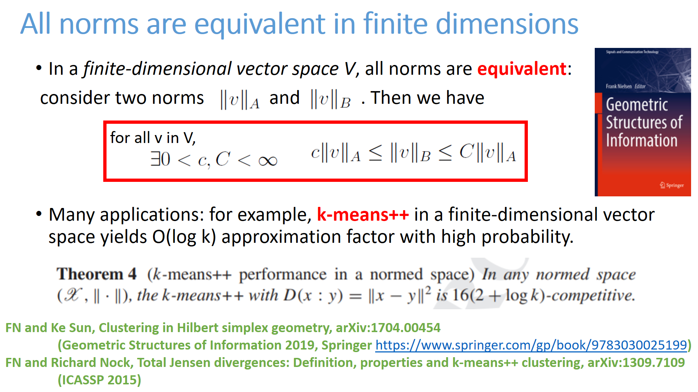</A>(217)</LI>
<LI><center><A HREF="card-218.html" target="_blank"></A>(218)</LI>
<LI><center><A HREF="card-219.html" target="_blank">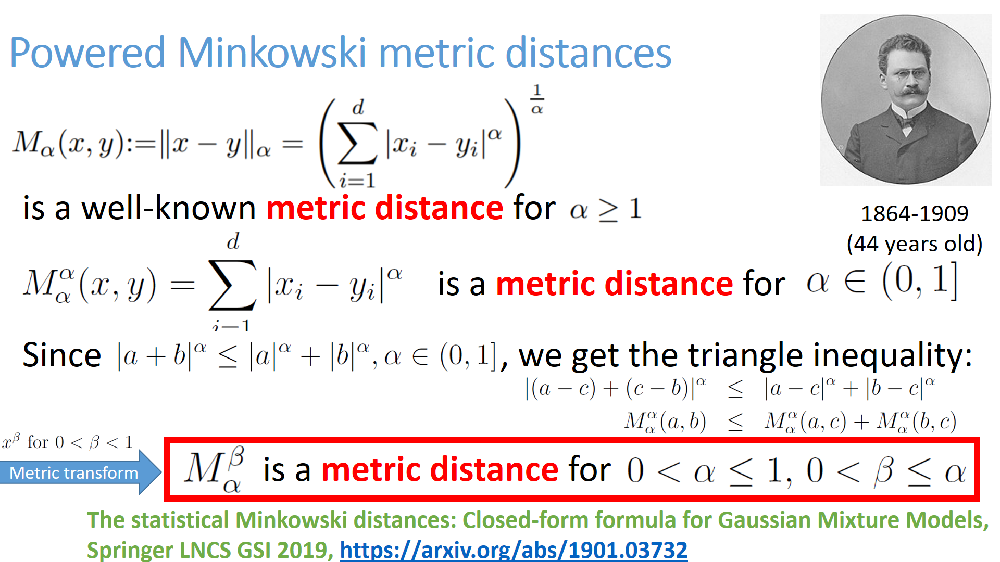</A>(219)</LI>
<LI><center><A HREF="card-220.html" target="_blank">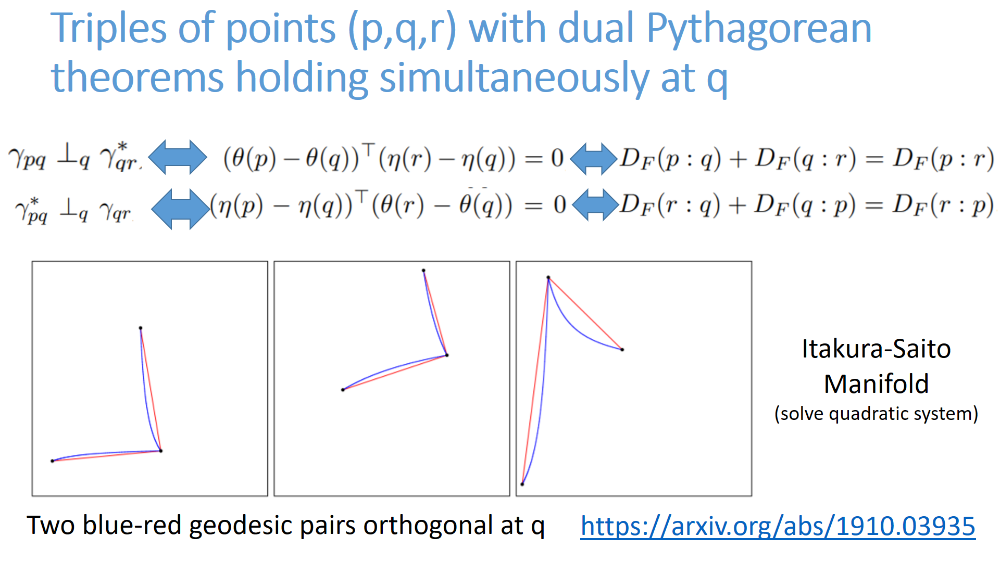</A>(220)</LI>
<LI><center><A HREF="card-221.html" target="_blank">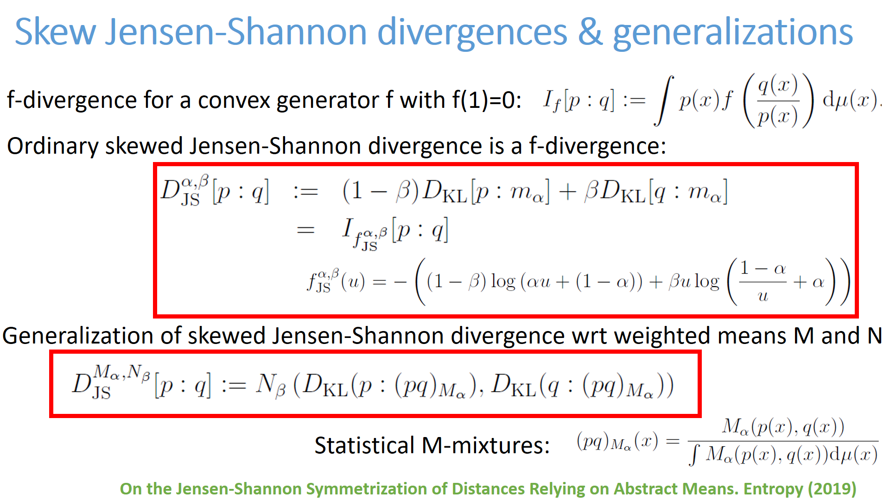</A>(221)</LI>
<LI><center><A HREF="card-222.html" target="_blank"></A>(222)</LI>
<LI><center><A HREF="card-223.html" target="_blank"></A>(223)</LI>
<LI><center><A HREF="card-224.html" target="_blank">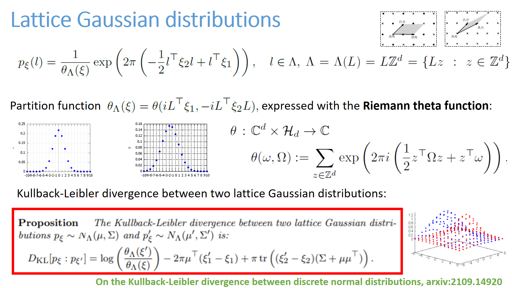</A>(224)</LI>
</ul><BR> <A HREF="index7.html">Previous card page</A>&nbsp;&nbsp;&nbsp; <A HREF="index9.html">Next card page</A>
